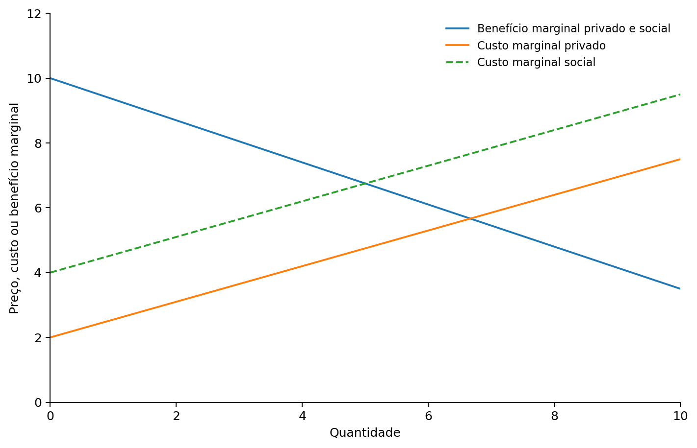
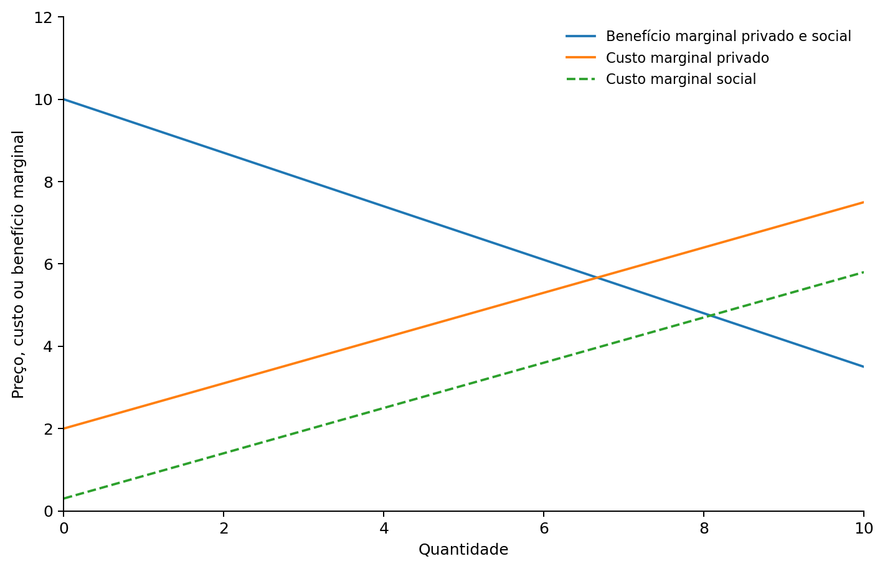
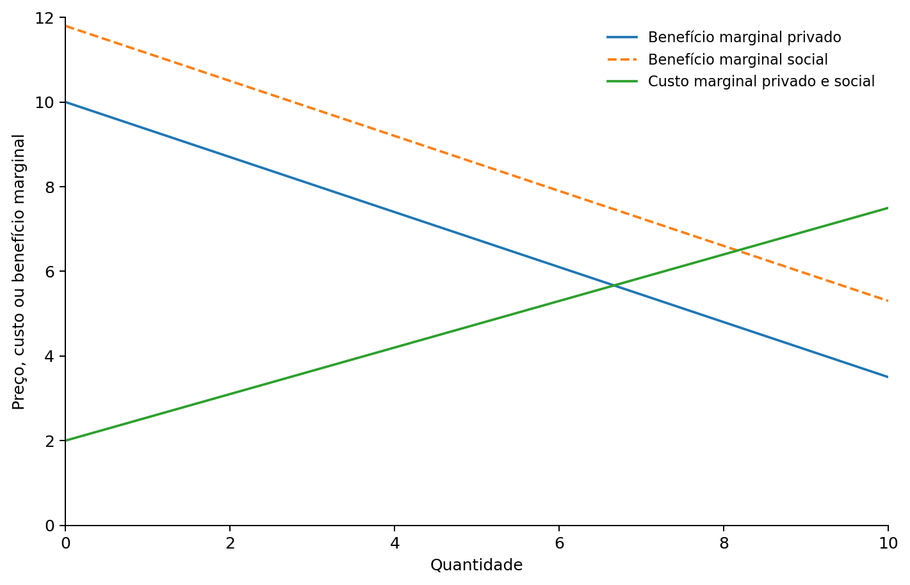
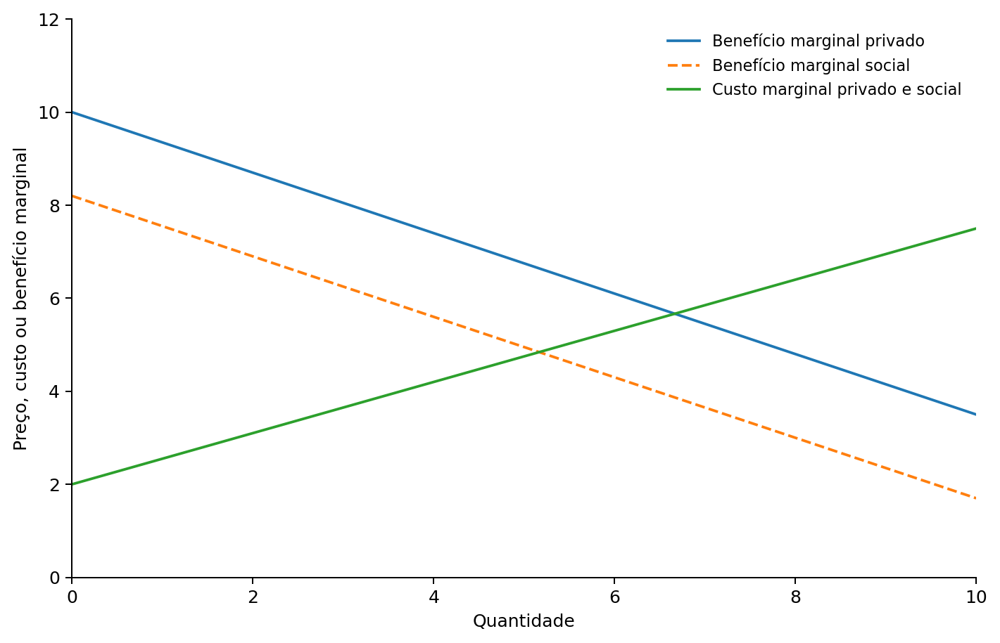

Externalidades, bens públicos e recursos comuns
Ao final da aula, devemos compreender:
Em mercados sem externalidades, compradores e vendedores consideram os custos e benefícios relevantes para suas próprias decisões.
Quando uma decisão afeta terceiros, o resultado privado pode deixar de coincidir com o resultado socialmente eficiente.
Note
Ideia central: o preço de mercado pode não refletir todo o custo ou todo o benefício de uma atividade.
Uma externalidade ocorre quando a ação de um agente econômico afeta o bem-estar de terceiros que não participam diretamente da transação.
A atividade impõe um custo a terceiros.
Exemplos:
A atividade gera benefícios para terceiros.
Exemplos:
Custo privado: custo considerado diretamente por quem produz ou consome.
Custo externo: custo imposto a terceiros e que não é pago por quem o provoca.
Custo social: custo total da atividade para a sociedade.
[ = + ]
Quando existe uma externalidade negativa, a decisão privada tende a considerar um custo menor que o custo social.
Exemplo: uma fábrica produz um bem e também gera poluição.
A firma considera o custo marginal privado.
A sociedade enfrenta o custo marginal social.
[ CMS > CMP ]

O equilíbrio de mercado considera o custo privado.
O ótimo social considera também o custo externo.
Assim:
[ Q_M > Q_S ]
Warning
Com externalidade negativa da produção, o mercado tende a produzir mais que a quantidade socialmente eficiente.
Uma atividade produtiva também pode gerar benefícios para terceiros.
Exemplo: pesquisa e desenvolvimento que gera conhecimento utilizado por outras empresas.
Nesse caso:
[ CMS < CMP ]

Parte do benefício da atividade não é apropriada por quem a realiza.
Por isso:
[ Q_M < Q_S ]
Note
Com externalidade positiva da produção, o mercado tende a produzir menos que a quantidade socialmente eficiente.
Benefício privado: benefício recebido diretamente por quem realiza a atividade.
Benefício externo: benefício recebido por terceiros.
Benefício social: benefício total gerado para a sociedade.
[ = + ]
Exemplos:
O consumidor considera seu benefício marginal privado.
A sociedade recebe também um benefício externo.
[ BMS > BMP ]

O mercado considera apenas o benefício privado percebido pelo consumidor.
O benefício social é maior.
Assim:
[ Q_M < Q_S ]
Note
Com externalidade positiva do consumo, a quantidade de mercado tende a ser menor que a quantidade socialmente eficiente.
Algumas decisões de consumo impõem custos a terceiros.
Exemplos:
Nesse caso:
[ BMS < BMP ]

O consumidor considera um benefício privado maior que o benefício social líquido da atividade.
Logo:
[ Q_M > Q_S ]
Warning
Com externalidade negativa do consumo, o mercado tende a gerar consumo excessivo.
| Externalidade | Relação social e privada | Resultado do mercado |
|---|---|---|
| Negativa na produção | (CMS > CMP) | Produção excessiva |
| Positiva na produção | (CMS < CMP) | Produção insuficiente |
| Negativa no consumo | (BMS < BMP) | Consumo excessivo |
| Positiva no consumo | (BMS > BMP) | Consumo insuficiente |
A lógica é sempre a mesma: a decisão privada não incorpora integralmente os efeitos sobre terceiros.
Internalizar uma externalidade significa alterar os incentivos para que o agente passe a considerar os efeitos externos de sua decisão.
O objetivo é aproximar a decisão privada do resultado socialmente eficiente.
Instrumentos possíveis:
A abordagem associada a Arthur Pigou procura fazer com que o agente enfrente o custo social de sua decisão.
Em uma externalidade negativa:
[ ]
O imposto eleva o custo percebido pelo agente e reduz a atividade em direção ao nível socialmente eficiente.
Note
A lógica não é punir a atividade, mas fazer com que o preço reflita um custo que antes recaía sobre terceiros.
Quando uma atividade gera benefícios externos positivos, o mercado pode produzi-la ou consumi-la em quantidade insuficiente.
Um subsídio corretivo aumenta o incentivo privado à atividade.
Assim, procura aproximar:
[ Q_M Q_S ]
Exemplos possíveis:
O governo pode estabelecer:
O governo pode alterar os incentivos por meio de:
A diferença central é que os instrumentos de mercado utilizam preços e incentivos para influenciar o comportamento.
O governo pode definir uma quantidade máxima total de determinada atividade ou emissão.
Depois, distribui ou vende permissões que podem ser negociadas.
Quem consegue reduzir a atividade a baixo custo pode vender suas licenças.
Quem enfrenta custos elevados para reduzi-la pode comprar licenças.
Note
O limite total é definido pela política pública, enquanto a negociação ajuda a distribuir o esforço entre os agentes.
Externalidades nem sempre exigem intervenção direta do governo.
As partes podem:
Um exemplo clássico envolve um produtor de maçãs e um apicultor, cujas atividades geram benefícios recíprocos.
O Teorema de Coase afirma que, quando os direitos estão bem definidos e as partes podem negociar com custos de transação suficientemente baixos, a negociação privada pode levar a uma alocação eficiente.
O ponto central é distinguir:
eficiência
de
distribuição dos ganhos.
A atribuição inicial dos direitos pode alterar quem paga e quem recebe, mesmo quando a negociação leva ao mesmo resultado eficiente.
A negociação pode ser difícil quando existem custos de transação elevados.
Exemplos:
Warning
Quanto maior o número de envolvidos e mais difícil a negociação, menor a chance de uma solução privada simples.
Para analisar bens públicos e recursos comuns, usamos duas características.
É possível impedir alguém de utilizar o bem?
O uso por uma pessoa reduz a quantidade ou qualidade disponível para outra pessoa?
Essas duas características permitem classificar diferentes tipos de bens.
| Rival | Não rival | |
|---|---|---|
| Excludente | Bem privado | Bem de clube |
| Não excludente | Recurso comum | Bem público |
Excludente e rival.
Excludente e não rival, pelo menos até certo nível de utilização.
Não excludente e rival.
Não excludente e não rival.
Um bem público é:
não excludente + não rival
Exemplos didáticos:
A dificuldade econômica decorre principalmente da não excludibilidade.
Se alguém pode usufruir do bem sem pagar, surge o problema do carona.
O carona, ou free rider, recebe o benefício de um bem sem contribuir para seu financiamento.
Cada indivíduo pode pensar:
Posso usufruir mesmo sem pagar.
Se muitas pessoas agirem dessa maneira, o mercado privado pode ter dificuldade para financiar o bem.
Note
O problema típico dos bens públicos é a suboferta privada.
Um bem público pode gerar benefícios sociais superiores aos seus custos e, mesmo assim, não ser fornecido adequadamente pelo mercado.
O governo pode:
A questão deixa de ser apenas quanto cada indivíduo está disposto a pagar diretamente.
A decisão sobre fornecer um bem público pode utilizar uma análise custo-benefício.
Em princípio:
[ Benefícios Sociais > Custos Sociais ]
indica que o projeto pode aumentar o bem-estar social.
A dificuldade está em medir benefícios que muitas vezes não possuem preços de mercado claros.
Exemplos:
Recursos comuns são:
não excludentes + rivais
Exemplos:
A ausência de exclusão facilita o acesso.
A rivalidade significa que o uso por uma pessoa reduz aquilo que permanece disponível para as demais.
Não excludente e não rival.
Problema típico:
pouco incentivo para pagar
Resultado:
suboferta
Não excludente e rival.
Problema típico:
incentivo para utilizar demais
Resultado:
sobreutilização
Imagine uma pastagem aberta a todos.
Cada criador recebe o benefício privado de colocar mais um animal no pasto.
O custo da deterioração da pastagem é dividido entre todos os usuários.
Para cada criador:
[ Custo Privado < Custo Social ]
Cada um possui incentivo individual para aumentar o uso do recurso.
Se todos fazem isso, o recurso é explorado excessivamente.
A Tragédia dos Comuns é uma forma de externalidade negativa.
Quando uma pessoa utiliza mais do recurso:
Por isso, decisões individualmente racionais podem produzir um resultado coletivo ineficiente.
Cada peixe capturado reduz o estoque disponível para os demais.
Cada motorista adicional aumenta o tempo de deslocamento de outros usuários.
Cada usuário pode retirar água sem considerar integralmente a redução do estoque coletivo.
Florestas, rios e outros recursos podem sofrer exploração excessiva quando o acesso é difícil de controlar.
Possibilidades:
Limitar o uso ou estabelecer cotas.
Fazer o usuário considerar o custo imposto aos demais.
Criar direitos de uso limitados e negociáveis.
Definir responsabilidade sobre o recurso quando isso for possível.
A escolha depende das características concretas do recurso e dos custos de implementar cada solução.
Corrigir os incentivos por preços.
Impostos para custos externos.
Subsídios para benefícios externos.
Permitir negociação quando ela é viável.
Direitos claros e baixos custos de transação podem permitir soluções privadas eficientes.
Definir responsabilidade sobre recursos escassos.
Isso pode reduzir o incentivo à exploração excessiva de recursos comuns.
[ Q_M > Q_S ]
O mercado realiza atividade em excesso.
[ Q_M < Q_S ]
O mercado realiza atividade em quantidade insuficiente.
Não rival e não excludente.
Problema: carona e suboferta privada.
Rival e não excludente.
Problema: sobreutilização e Tragédia dos Comuns.
Important
Quando custos ou benefícios relevantes não são incorporados aos preços e às decisões privadas, o mercado pode deixar de produzir uma alocação socialmente eficiente.